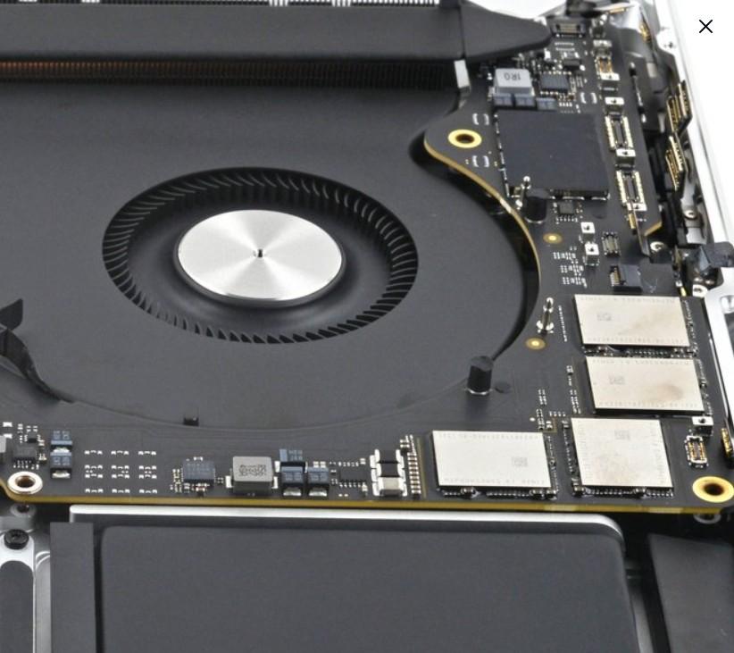

MacBook Air and MacBook Pro repairs at Shop 6, Madeira Isles, Danville. Board-level diagnostics, Thermal ICU cleaning, screen replacement, battery swaps — from a Mechatronics-trained engineer.

Cracked Retina display, dead pixels, or backlight failure. Liquid Crystal and LCD panel replacement. From R2,500.
MacBook battery expanding, draining in hours, or not detected. Genuine-grade cell replacement. From R1,200.
MacBook running hot, fans spinning loud, or throttling? Deep dust removal, thermal compound reapplication, and performance restoration.
Coffee, water, or any liquid spill. Board-level ultrasonic cleaning and component-level diagnosis before data loss occurs.
MagSafe not connecting or USB-C charging port damaged. Port replacement or board-level power circuit repair.
No power, no display, kernel panics. Micro-soldering and board-level component replacement. We fix what others say is dead.
Upgrade your MacBook storage or recover files from a failing or formatted SSD.
Butterfly or scissor keyboard failure, sticky keys, or trackpad not clicking. Full deck replacement.